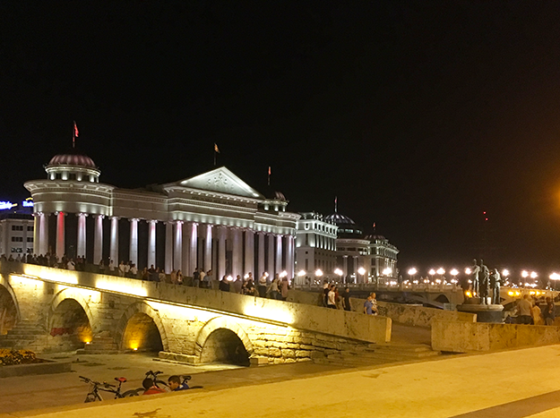
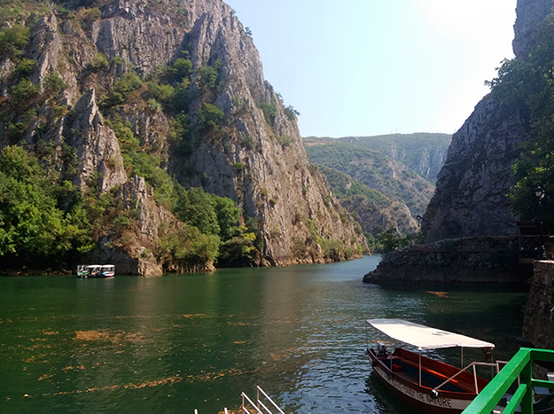
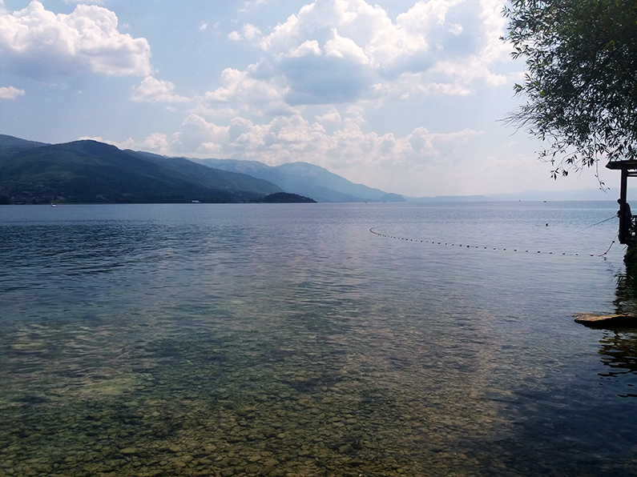
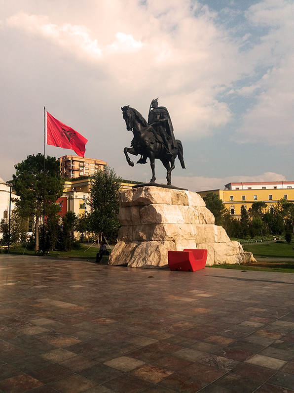
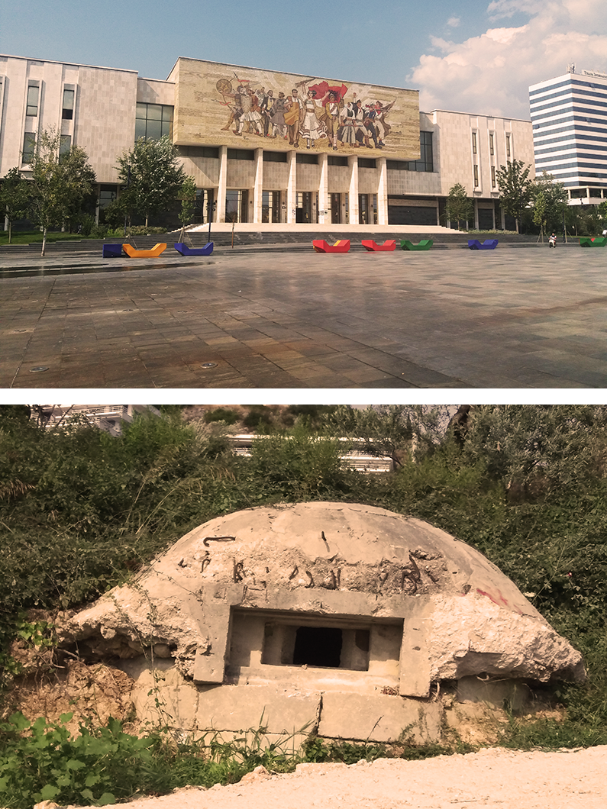
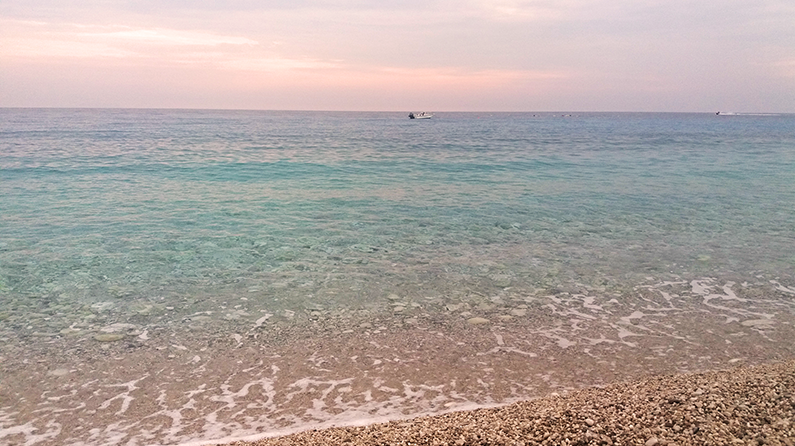
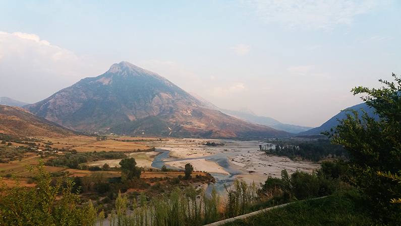

Onontdekt Noord-Macedonië & Albanië: 8 redenen om deze Balkanparels te bezoeken

Gereisd in: Augustus 2019
Noord-Macedonië & Albanië, twee landen waarbij we niet meteen denken aan vakantie. Misschien eerder aan het communisme, vreemde talen en hun wens om toe te treden tot de Europese Unie. De geschiedenis van beide landen is nog voelbaar als je er doorheen loopt. Toch hebben deze Zuid-Oost Europese landen veel te bieden tijdens een vakantie, ieder land zijn eigen redenen. Laat je verrassen en ontdek waarom beide landen zó leuk zijn!
Noord-Macedonië & Albanië, twee landen waarbij we niet meteen denken aan vakantie. Misschien eerder aan het communisme, vreemde talen en hun wens om toe te treden tot de Europese Unie. De geschiedenis van beide landen is nog voelbaar als je er doorheen loopt. Toch hebben deze Zuid-Oost Europese landen veel te bieden tijdens een vakantie, ieder land zijn eigen redenen. Laat je verrassen en ontdek waarom beide landen zó leuk zijn!
1. Noord-Macedonië VS Griekenland
Onlangs is de naam van de Voormalig Joegoslavische Republiek van Macedonië veranderd in Noord-Macedonië. De naam is al eens veranderd, omdat de naam Macedonië gevoelig ligt bij de Grieken. Macedoniërs zullen hun land nooit Noord-Macedonië noemen. Het gekibbel met de Grieken is net zoals een broer-zus relatie: je mag elkaar plagen maar je moet toch samen kunnen leven. Opmerkelijk detail is dat je in Macedonië op vele plekken nog de oude vlag van het land ziet. Op deze rode vlag staat het symbool van het rijk van Alexander de Grote. Ook hier waren de Grieken niet blij mee gezien hij volgens hen een Griekse held was en geen Macedonische.
2. De veelzijdigheid van Skopje
De hoofdstad is een stad met duizenden gigantische standbeelden. Een van die standbeelden is een beeld van, jawel, Alexander de Grote. Maar uiteraard moest de naam hiervan worden veranderd naar "Man op Paard" om de Grieken tevreden te houden. Op het Macedonian Square vindt je vele nieuwe witte gebouwen die de indruk moeten wekken dat ze er al veel langer staan. Vooral in de avonden is het mooi om hier te zijn wanneer de beelden en gebouwen verlicht zijn en de fonteinen aanstaan, het lijkt wel kermis!
Wanneer je een van de bruggen naar de overkant neemt, komt je uiteindelijk terecht in het oude gedeelte van de stad waar de Turkse bazaar te vinden is. Dit was ooit de tweede grootste bazaar van Europa (gezien hij op de karavaanroute lag). Hier hangt echt een sfeertje met leuke restaurantjes! Aanrader is om hier de Shopska salade te nemen, een traditioneel Macedonisch gerecht. Wil je even de warme stad uit? Bezoek dan het Matka meer en maak een boottocht door de kloof of neem de kano. In de grotten kun je lekker afkoelen.
Wanneer je een van de bruggen naar de overkant neemt, komt je uiteindelijk terecht in het oude gedeelte van de stad waar de Turkse bazaar te vinden is. Dit was ooit de tweede grootste bazaar van Europa (gezien hij op de karavaanroute lag). Hier hangt echt een sfeertje met leuke restaurantjes! Aanrader is om hier de Shopska salade te nemen, een traditioneel Macedonisch gerecht. Wil je even de warme stad uit? Bezoek dan het Matka meer en maak een boottocht door de kloof of neem de kano. In de grotten kun je lekker afkoelen.


3. Pittoreske Ohrid op de grens van beide landen
Zowel de stad als het gelijknamige meer Ohrid staat op de Unesco Werelderfgoedlijst. Het meer ligt zowel in Macedonië als Albanië maar de stad ligt alleen in Macedonië. Het schattige en idyllische stadje met smalle straatjes heeft ruim 300 kerkjes en daarmee ook het meest gefotografeerde kerkje van Macedonië. Vanuit dit Sveti Jovan kerkje kijk je uit op het kraakheldere meer en kun je Albanië zien liggen aan de andere kant. Via de boardwalk loop je weer terug naar het gezellige centrum van Ohrid, waar Nederlander zich overigens thuis zullen voelen. De avond kun je mooi romantisch afsluiten aan een van de restaurants aan het meer.

4.Byrek: de ontbijtsnack
Zowel in Macedonië als Albanië zie je Byrek kraampjes. Dit deeggerecht is gevuld met kaas, gehakt, spinazie of witte bonen. De lokale bevolking eet deze lekkere snack als ontbijt en het vult heel goed!
5.Kleurrijk Tirana bouwt op
Tirana, een stad die druk en chaotisch lijkt op het eerste oog. De hoofdstad van Albanië is net als het land volop in ontwikkeling. Albanië is pas sinds 1991 vrij van het communisme en is lange tijd geïsoleerd geweest van de rest van de wereld. Contact buiten de landgrenzen was bijna onmogelijk. Als je vluchtte, anders of slimmer was dan de rest, dan werd je gestraft omdat je als bedreiging werd gezien. Propaganda was normaal, zo ook op de gevel van het National History Museum. De sporen van het communisme zijn nu nog steeds zichtbaar. Probeer maar eens alle bunkers te tellen die je tegenkomt. Ook de piramide van dictator Hoxha en zijn villa staan nog steeds in de stad. Weliswaar leeg, omdat niemand weet of deze nou weggehaald moeten worden of niet. Het land erkent dat het communisme geen goed idee was en strijdt voor een plekje in de EU. Tirana probeert het leven te beteren en geeft letterlijk kleur aan de grijze typisch communistische gebouwen. Je ziet overal kunstwerken in de stad, alles om de stad vrolijker te maken. Bunkers bouwen ze om tot musea of barretjes. In de wijk Blloku kon je ten tijden van het communisme als gewone burger niet lopen. Dit was de wijk waar Hoxha woonde. Nu zijn er tal van hippe restaurantjes te vinden. Mooi om te zien dat de stad zich blijft ontwikkelen en open staat voor verandering.


6.Onderweg in Albanië
Autorijden in Tirana en Albanië is wat spannender. Probeer de grote eenrichtingsweg rond het Skanderbergplein te vermijden, dan kom je al een heel eind. Als je de chaotische rotondes in en rondom Tirana hebt gehad en de stad uitrijdt wordt het beter. Pas wel op voor spookrijders! Als je richting het noordwesten rijdt, kom je uit bij een waterpark. Heerlijk om af te koelen als je weg wilt uit de hete stad. Als je het land binnenkomt via de grens met Noord-Macedonië dan zie je meteen al een groepje bunkers in de heuvels. Ook bij de kust zie je ze overal. Niemand weet hoeveel het er ooit zijn geweest. Als je door het land rijdt zie je bergen, landerijen en huizen die half afgebroken zijn of nooit zijn afgemaakt. De toestand van de verharde wegen is goed rondom Albanië, richting Berat, Gijrokaster en Dhermi. In deze omgeving zie je overal dat er aan de weg wordt gewerkt. Vooral voor de automobilisten moet je oppassen. Wanneer je denkt dat je te hard rijdt, wordt je alsnog ingehaald door een Albanees. In tegenstelling tot Macedonië heeft Albanië geen tolwegen. Verder maken de koeien, schapen, geitjes en een enkele kip het leuk om door Albanië te rijden. Houdt je van haarspeldbochtjes? Volg dan de Llogara pas, een slingerweg die begint in de badplaats Dhermi aan de Albanese Rivièra. Je rijdt dan door de bergen en je komt wederom bunkers, verschillende berggeitjes en honingverkopers aan de weg tegen.


7.Dhermi aan de Albanese Rivièra
Dhermi, een redelijk ongerept plaatsje aan de Albanese Rivièra. Het stadje is iets hoger gelegen en kijkt uit op zee. Het strand bestaat uit kiezels en kristalhelder water. Typisch Albanees zijn de rieten parasolletjes boven je ligbedje. Vanuit het water kijk je uit op de bergen. Dit plaatsje is nog in opkomst wat ergens ook wel de charme is. Het is nog niet zo toeristisch en er is nog nauwelijks hoogbouw van hotelcomplexen.
8.Nog meer werelderfgoed
Buiten het beroemde Ohrid meer is er nog meer werelderfgoed! Als je een roadtrip maakt van Tirana naar de kust kun je Berat meteen meepakken. Dit staat bekend als de stad van de duizend vensters. De stad wordt onderbroken door een rivier en aan beide kanten zie je de typisch witte huisjes met bruine dakjes. Verder naar het zuiden ligt het bergachtige Gjirokaster. Een mooi uitzicht op de vallei heb je vanaf het kasteel, al moet je er even moeite voor doen. Dit is een van de oudste steden van Albanië en de geboorteplaats van dictator Hoxha en schrijver Kadare.
Tips: Kortom, beide landen hebben genoeg redenen om ernaar toe te gaan en dat voor een relatief goedkope prijs! Er moet wel nog wat gebeuren om het wat aantrekkelijker te maken voor toeristen. Zo wordt er nog niet overal Engels gesproken en ook in de musea ontbreken Engelse beschrijvingen. Dat de stroom geregeld uitvalt in Albanië is niet ongewoon en in hoofdstad Tirana kan het zelfs voorkomen dat je geen water hebt!
Kleine voorspelling: over tien jaar gaan we allemaal naar Macedonië en Albanië. De Albanese Rivièra wordt dan één van de populairste strandbestemmingen in Europa!
Wil je ook weten hoe byrek of shopska salade smaakt? Maak het gerecht zelf!
Kleine voorspelling: over tien jaar gaan we allemaal naar Macedonië en Albanië. De Albanese Rivièra wordt dan één van de populairste strandbestemmingen in Europa!
Wil je ook weten hoe byrek of shopska salade smaakt? Maak het gerecht zelf!